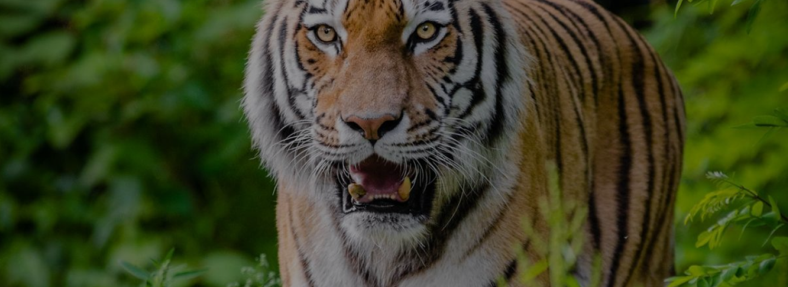

ORIGINE: ANIMALE TERRESTRE
TIGRE
La tigre è un mammifero che vive nelle foreste dell’india, dell’Indocina, della Malesia e dell’Oriente russo.
PERCHÈ È IN VIA DI ESTINZIONE?
La tigre è un animale a forte rischio poiché viene cacciata per via della sua pelliccia ritenuta pregiata e per sport, paura o superstizione. Questo porta a una diminuzione enorme della specie.
- Dimensioni: è di medie dimensioni, raggiunge i 140 kg di peso e i 4 metri di lunghezza.
- Vita media: 16/18 anni.
- Colore: pelliccia particolare per via delle sue striature nere sul manto rossiccio.
- Alimentazione: carne e riesce a mangiarne 60 kg al giorno.
- Stile di vita: un animale solitario e l'unico momento in cui sta in branco è quando nasce la propria prole.
- Curiosità: è un animale che essendo molto agile e veloce riesce ad uccidere le proprie prende con un singolo colpo.